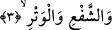

hasenenin patlayıp çıkmasına ve “Kim iyilikle gelirse ona getirdiğinin on katı
vardır.” (el-En’âm, 6/160) âyetiyle işâret edilen on iyiliğe işâret etmektedir. Allah’ın
“gece” ismini vermesinin sebebi bu on hasenenin/iyiliğin amel gündüzünden iktisâb ile
değil ilâhî mevhibe yoluyla gayb âleminden olarak bir hasenenin ahadiyyet mertebesi
gaybından zuhûr ettiği içindir.
3. Çifte ve teke,
“Şef’” çift demektir. Çünkü Arapça’da bu kelime bir şeyi benzerine katmak demektir.
“Vitr” tek demektir. Yâni bu gecelerin çift ve tekine yemin olsun, demektir. Ancak zâhir
olan bu kelimelerin daha genel mânâda tefsir edilmesidir. Yani bütün varlıkların çiftine
ve tekine yemin olsun, demek olur. Çünkü her şey ya çift ya da tek olur.
Râğıb Isfahânî der ki: Yaratılmışların tümü mürekkeb olmaları bakımından çifttirler.
Nitekim Allah “Her şeyden iki eş yarattık.” (ez-Zâriyât, 51/49) buyurmuştur. “Tek”e
gelince o Allah Teâlâ’dır. Çünkü her yönden birlik/vahdet ona âiddir. Hâl ehlinin
büyüklerden birisinin şu sözü de bu mânâdadır: Allah çift üzerine yeminle esmâî
kesrete ve tek üzerine yemin ile zâtî hakîkî vahdete işâret etmektedir.
Çift ve teke şunlar dâhildir: Dört unsur ve dokuz felek, on iki burç ve yedi gezegen,
akşam namazı ve diğer namazlar, Zülhicce’nin onuncu günü olan nahr/kurban günü ile
bu günlerin dokuzuncusu olan arefe günü, nahr gününden sonraki iki gün ve üçüncü gün.
Âdem ve Havva eş/çift, Meryem ise tektir. Allah’ın Mûsâ (a.s.) için fışkırttığı on iki
pınar çift, dokuz âyet/mûcize tektir. Âd kavmini helâk eden rüzgârın (onlara musallat
olduğu) günler çift, geceler ise tektir. Nitekim Allah Teâlâ: “Allah, onu kesintisiz
olarak yedi gece, sekiz gün onların üzerine musallat etti.” (el-Hâkka, 69/7)
buyurmuştur.
Şunlar da çift ve tektir: Otuz gün olan ay ve yirmi dokuz gün çeken ay, uzuvlar ve kalp,
iki dudak ve dil, namazdaki iki secde ve rükû, Cennetin kapıları ve Cehennemin
kapıları, Cennetin dereceleri ve Cehennemin derekeleri. İlim ve cehalet, kudret ve
âcizlik, isteme ve kerih görme, hayat ve ölüm gibi mahlûkatın sıfatları ile yokluğu
olmayan varlık, ölümü olmayan hayat, cehâleti olmayan ilim, acziyeti olmayan kudret ve
zilleti olmayan izzet gibi Hakk’ın sıfatları. Çift ve tek olmak üzere sayılar. Günler ve
geceler ile kendisinden sonra gece olmayan kıyamet günü. Muhammed ve Ahmed,
Mesih ve Îsa, Yûnus ve Zünnûn gibi iki ismi olan peygamberler ile Âdem, Nuh ve
İbrâhim gibi tek ismi olan peygamberler. Mekke ve Medine Mescidleri -bu sebepten o
ikisine “Haremeyn-i Şerifeyn” denir- ile Mescid-i Aksâ. Safa ve Merve tepeleri ile
Beyt-i Haram (Kâbe). Nefsin cem’ hâlinde ruh ile beraber olması, iftirâk hâlinde ayrı
olması.